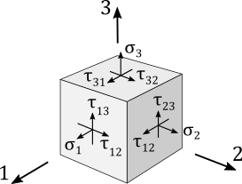

complexType · extension complexBaseType · sequence
Material

| Name | Type | Constraints | Use | Default | Description |
|---|---|---|---|---|---|
@externalDataDirectory | xsd:string | optional | Directory of the external data file | ||
@externalDataNodePath | xsd:string | optional | Path of the node inside the external data file | ||
@externalFileName | xsd:string | optional | Name of the external data file | ||
@uID | xsd:ID | optional | UID |
| Name | Type | Constraints | OccurrenceHow often the element may appear at this place. The schema writes it as minOccurs and maxOccurs on the declaration. | Default | Description |
|---|---|---|---|---|---|
| sequenceThe children below must appear in exactly this order. Each may repeat as often as its own occurrence allows. | |||||
name | stringBaseType | [1..1] required | Name | ||
description | stringBaseType | [0..1] optional | Description | ||
rho | doubleBaseType | [1..1] required | Material density [kg/m3] | ||
| choiceExactly one of the alternatives below may appear, unless the occurrence next to this line says otherwise. | |||||
isotropicProperties | isotropicPropertiesType | [1..1] required | Isotropic material properties | ||
orthotropicShellProperties | orthotropicShellPropertiesType | [1..1] required | Orthotropic shell material properties | ||
anisotropicShellProperties | anisotropicShellPropertiesType | [1..1] required | Anisotropic shell material properties | ||
orthotropicSolidProperties | orthotropicSolidPropertiesType | [1..1] required | Orthotropic solid material properties | ||
anisotropicSolidProperties | anisotropicSolidPropertiesType | [1..1] required | Anisotropic solid material properties | ||
referenceTemperature | doubleBaseType | [0..1] optional | Reference temperature for thermal expansion coefficient [K] | ||
specificHeatMap | specificHeatMapType | [0..1] optional | Specific heat capacity as a function of temperature | ||
emissivityMap | emissivityMapType | [0..1] optional | Emissivity as a function of temperature | ||
| Type | Name |
|---|---|
materialsType | material |